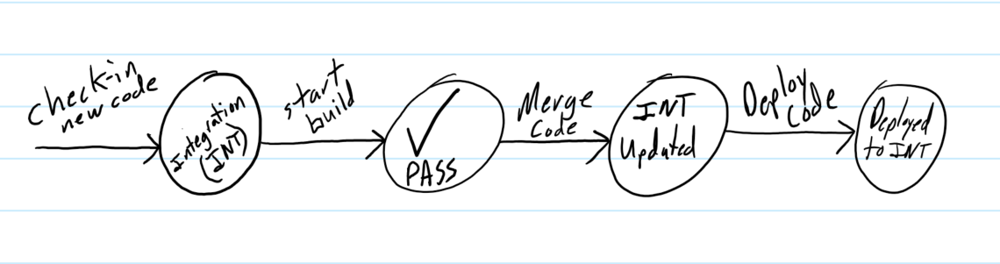
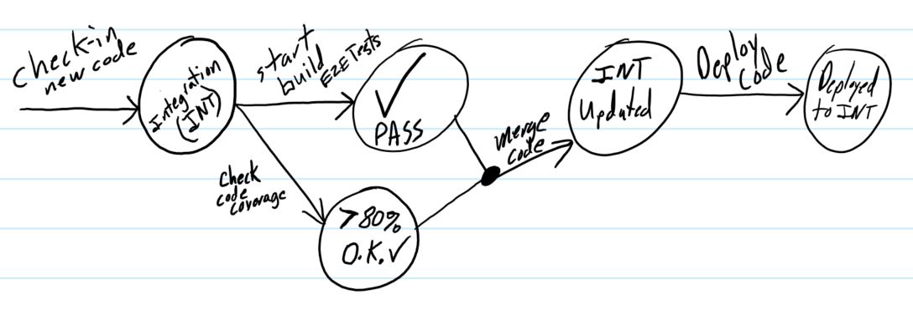

I am a software developer, born and raised in Wisconsin and have now fled to the land of 10,000 Lakes, city with the most fortune 500 companies per capita, Minneapolis. My passion for computers came at a young age, around the time of the first iMac (I
had a green one). I used to help my dad make websites and then I got into more technical stuff in high school. This seemed to be the reason behind why I went to college for Software Engineering. From there on my mind began to flood
with new ideas, creations.
Tech
In order to develop innovatived solutions across multiple platforms the use of frameworks and libaries are key. For example, this site uses Font Awesome and Bootstrap, giving it that smooth and clean look. I have created web applications using HTML5,
ES6, AngularJS, Rambda, and Redux. I'm also not half bad at using photoshop.
Looking for a web server to deploy your latest creation? Check out:
Digital Ocean Use my referral link above to get a $10 credit. With their pre-installed packages you can have a server up and running in less than a minute.
Works in Progress
Here is what I have been working on recently:
Plateo Plateo is an application allowing people to communicate with one another based on a license plate number. I used MEAN stack to create the application and then hosted it on a digital ocean droplet. Try it out and feel free to break
it! Or even hack it!
Blog:
What's new with me? Angular2 + TypeScript and lots more!
January 11, 2017
It has been a while since I have posted a blog. So let's jump right in! So over the last month I have spent a lot of time with my family and travelling for the holidays, but most of all I have learned a bunch of stuff. I spent several days learning how to write automated acceptance tests (AAT) for UIs. I first began by reading up on how to setup Protractor, an end-to-end (e2e) testing framework for AngularJS applications. Once I got Protractor setup I was able to run tests against my UI in a real browser (in my case Chrome). With Protractor you are able to perform actions on html elements, whether that be clicking a button or entering text into an input field. You can also verify that the user's action (Protractor in this case) did what was expected by analyzing the values of other html elements. One helpful tip for writing e2e tests is to create helper methods that do a given action. For example, a button click function that takes a id (<div id="testId"></div>) as input and then performs the button click for you. This helps keep your tests clean and easy to follow.
I can now finally say I have Angular2 + TypeScript under my belt. I had previous knowledge of AngularJS before taking a Pluralsight course on Angular2. It took me about two days to take the whole course and have a good understanding of how to setup and build an Angular2 application. I then proceeded to convert Plateo (previously written in Angular 1.4.2) to Angular2. While converting my application I took the time to get organized. I created application templates so I could create a new Angular2 apps in a matter of seconds and have the folder structure that I wanted. For my IDE I choose to use VS Code. Previously I was using Atom which I loved, but I found it wasn't as friendly with TypeScript as VS Code was (IntelliSense, syntax checking, etc.). With all new IDEs I spent some time modifying my key bindings/shortcuts, installing extensions/plugins, and picking a color theme that was warm to the eyes. I have been refining my list of extensions and settings for VS Code, but I will be sure to include those in the next post (they will also be in github). After a few weeks of playing with Angular2 I decided it was time to install snippet extensions. These extensions help type out all the base code for components and templates so all you have to do is fill in the logic. Angular CLI follows the same idea by providing Angular2 setup for modules, apps, and components from the command line instead of inline.
By leveraging new technologies, frameworks, and tools I am able to develop software more efficiently. Check back here for more tips and tricks on software development.
Swag and iPhone 7 Plus!
November 29, 2016
Today I received my iPhone 7 Plus and my swag from #Hacktoberfest. GitHub and Digital Ocean came through with a bunch of stickers and an awesome shirt, really good quality go check it out on my twitter!
To start off I love the new color of the iPhone, Jet Black, really blends seamlessly with the screen/glass. One downside is that it scratches really easily.
I also like how the home button and haptic feedback turned out.
I have upgrade from the iPhone 6 so the 3D touch is taking a bit to get used to. I seem to have a hard time trigger the “organize apps” mode on the home screen.
I also noticed when I choose camera from the control center it takes several clicks before it actually opens, not sure if this is a software bug with the 3D touch vs. regular click or user error.
I also observed that the shutter gradient change isn’t smooth like it was on the iPhone 6 and 6s. When viewing or taking video you can see the shutter transition when you go from dark to light
and light to dark environments. I was really surprised to see that this wasn’t fixed in the 10.1.1 iOS release.
I haven't played around with the portrait mode a ton yet, but my initial portraits turned out nice (watch my instagram for portraits).
I also noticed during FaceTime it seems to adjust to lighting more frequently and makes the image a lot brighter,
sometimes so bright it white outs the background even if I haven’t moved (set my phone on the desk and it would adjust).
The new stereo speaker system is much better. It no longer sounds like a tin can. I have also noticed when I am talking on speaker phone or FaceTime the microphone doesn't pick up the audio as well as my iPhone 6.
Before I was able to rest my phone on my stomach when I was laying down and it would pick up the audio just fine; this is not the case anymore. Even standing my phone up on the desk now has negative affects on the audio.
Apple’s “subliminal marketing” strategy is unreasonable and more evident than ever. For example, “Hey Siri” only works on battery power if
you have a specific model iPhone (iPhone 6 – must be on charger, iPhone 7 – works on battery); this is a pure software feature.
Another thing I noticed is that with the iPhone 7 it doesn’t ask me to connect to wifi every 30 seconds when I am travelling about town,
whereas on my iPhone 6 it would ask me all the time (mid message, etc.) which got annoying if I didn’t shut wifi off.
This could have been a fixed in the iOS 10.1.1 update or could be part of their strategy to get you to upgrade phones.
A lot of the camera features/effects are also pure software features, but Apple restricts these features by model.
Check out my quick unboxing video here.
Dropped My First Vlog Today!
November 9, 2016
I decided to give vlogging a try on my last trip and here was the result, if you like it subscribe:
I need to invest in a better camera if I am going to continue vlogging, my iPhone just isn't cutting it. I also wanted to shout out to all the other YouTubers/vloggers, it takes some mad skill to make a good vlog and I wanted to recognize them for that.
I am planning to start posting more videos on my YouTube channel so stay tuned. I am not sure what my main content will be, but I will say it will include my hobbies and some behind the scenes on making web applications.
I also want to make some videos regarding interviewing and how to be successful in your career. Keeping this blog short today, enjoy the vlog!
Automate Everything!
November 2, 2016
Early on in my career I began to recognize patterns, or a set of steps that were repeating. These patterns consumed lots of my time so I began to automate them.
One example of this is when I was writing unit tests, I would add the class, import my libraries, and write a test for each method. This was a very tedious process so I wrote a quick web app that took
in formatted source code for an individual class as input and then would output my unit test class; this saved me hours of work.
Today I find myself automating many steps of the software development process. Most recently I have been using Distelli to automate my builds and deployments.
More recently in blogs, software development, tech conferences the word DevOps has been buzzing around.
The DevOps process emphasizes on reducing time to market, whether that be new features or bug fixes, and high quality applications. DevOps utilizes tools to automate everything (testing, workflows, infrastructure, etc).
By adopting DevOps development teams/individual can release to production more frequently, this is key for having a competitive advantage. Freeing up time by using automation allows for more focus on improving software, adding new features, and focusing on the business.
What would this look like in regards to development process?

This is what is referred to as the DevOps Pipeline.This blog was posted using the pipeline I have created for this website.
Several other key terms that go with DevOps is continuous integration (CI), continuous delivery (CD), and continuous deployment. Continuous Integration refers to frequently merging working copies to a centralized repository to ensure that the new code can be "integrated" successfully.
Often times builds will be setup to kick off before a check in can be merged to the central repository. Continuous Delivery is the ability to deliver new software to production at any time during the development process; team chooses when to go live.
One flavor of this is Continuous Deployment. Continuous Deployment refers to any change that is checked in is automatically deployed to production given X, Y, and Z pass. Tools like Jenkins, Travis CI, GitHub, Bitbucket, Distelli, SonarQube, Coveralls, Codacy, and many others help facilitate this process.
Using some of these tools might change the DevOps Pipeline into something like this:

Plug of the month:
Collab With Me Looking for someone to collaborate with and/or build some cool software, tweet at me or message me on one of my social medias.
When not on the keyboard coding away I enjoy curling, hockey, snowboarding, kneeboarding, wake surfing, wake*, outdoors, and cruising in my volkswagen.